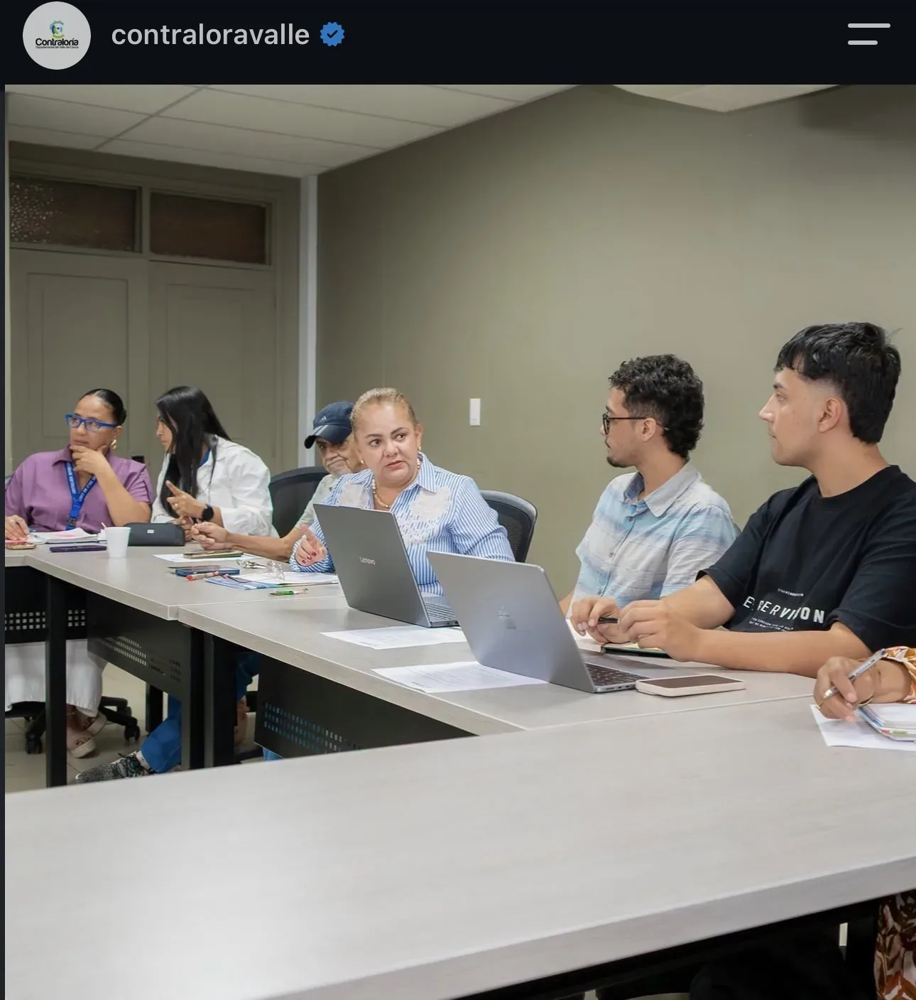

Fundación Herencia de Timbiquí
Pacífico colombiano · 2025–2026Como coordinador de comunicaciones diseñé e implementé el plan estratégico de la fundación y cubrí sus procesos comunitarios en el litoral Pacífico.
Ver proyectoSoy Alejandro Guerra Gómez, comunicador social y periodista. Diseño estrategias de comunicación para la innovación social, las juventudes y los derechos humanos en Cali y el Pacífico colombiano.
Cada proyecto es una parada: fundaciones, juventudes, instituciones públicas e investigación en el Valle del Cauca y el Pacífico.
Como coordinador de comunicaciones diseñé e implementé el plan estratégico de la fundación y cubrí sus procesos comunitarios en el litoral Pacífico.
Ver proyectoUna investigación que visibiliza una problemática social en el ámbito educativo, premiada con oro.
Ver proyectoGestor social y analista de comunicaciones: conecto a las juventudes con las instituciones para la incidencia a nivel nacional.
Ver proyectoPlan de comunicación interna, ganador del reto de consultoría en comunicación organizacional.
Ver proyectoSecretario general de la plataforma que articula a las organizaciones juveniles de la ciudad.
Ver proyectoCubro de forma continua los proyectos de la Fundación Herencia de Timbiquí, la Asociación Colombiana de Juventudes y la Plataforma Distrital de Juventudes. Me encargo de la preproducción, la grabación, la edición y la publicación.

Redes sociales para organizaciones sociales

Líder del proyecto “Gestión cultural cuir en Cali”

Control social juvenil a la inversión pública

Investigación y reportajes sobre derechos humanos

Campaña de divulgación sobre agua y El Niño

Debates, conversatorios y talleres con juventudes
En los últimos dos años diseñé y coordiné la comunicación de fundaciones, plataformas juveniles e instituciones públicas, articulando actores públicos, privados y comunitarios.
También me formo en administración pública, para que cada proceso de incidencia sea viable y sostenible.
“La comunicación no es un proceso solitario, es un tejido colectivo.”